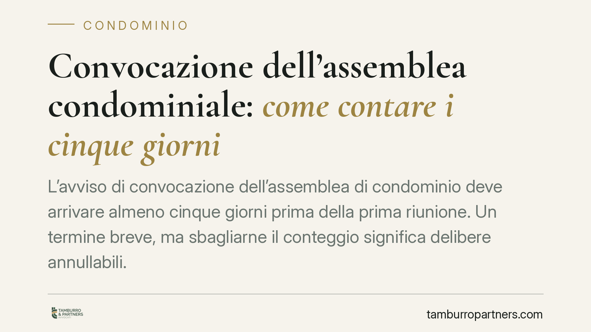

Convocazione dell'assemblea condominiale: come contare i cinque giorni
L'avviso di convocazione dell'assemblea di condominio deve arrivare almeno cinque giorni prima della prima riunione. Un termine breve, ma sbagliarne il conteggio significa delibere annullabili. Due ordinanze della Cassazione chiariscono come contare i giorni a ritroso e cosa accade quando la raccomandata resta in giacenza alle Poste.

Il fatto e perché conta
Cinque giorni sembrano pochi, ma sono il perno della regolarità di ogni assemblea condominiale. L'avviso di convocazione va ricevuto da ciascun condòmino almeno cinque giorni prima della data fissata per la prima convocazione. Un conteggio errato espone la delibera all'annullamento su impugnazione del singolo condòmino. La Corte di Cassazione, con le ordinanze n. 18635/2021 e n. 20535/2025, ha precisato il metodo di calcolo e il peso della giacenza postale.
Inquadramento normativo
La regola è contenuta nell'art. 66, terzo comma, delle disposizioni di attuazione del codice civile: l'avviso deve pervenire "almeno cinque giorni prima della data fissata per l'adunanza". La giurisprudenza qualifica questo come termine "libero": non si contano né il giorno in cui avviene la ricezione né quello dell'assemblea. Tra i due estremi devono restare cinque giorni interi.
Sul momento in cui l'avviso si considera ricevuto opera l'art. 1335 c.c., secondo cui gli atti diretti a una persona si reputano conosciuti nel momento in cui giungono all'indirizzo del destinatario. Per il computo si applicano i criteri dell'art. 155 c.p.c., richiamato in materia: nel conteggio a ritroso non si considera il giorno finale (l'assemblea) e si risale indietro. Se il termine scade in giorno festivo, la convocazione va anticipata.
Il mancato rispetto del termine non rende la delibera nulla, ma annullabile ai sensi dell'art. 1137 c.c. Chi intende farla valere deve impugnarla entro trenta giorni, decorrenti dalla deliberazione per i dissenzienti e astenuti, dalla comunicazione per gli assenti.
Come si contano i cinque giorni
Il calcolo è a ritroso. Fissata l'assemblea, ad esempio, per il giorno 20, non si conta il 20. Si risale indietro: 19, 18, 17, 16, 15. Il quinto giorno utile è il 15. L'avviso deve quindi pervenire entro il 14. Se il 15 cade di domenica o in un festivo, il termine si anticipa ulteriormente a tutela del condòmino.
L'errore più frequente è considerare la data di spedizione invece di quella di ricezione. Ai fini dell'art. 66 disp. att. c.c. conta il momento in cui l'avviso arriva nella sfera del destinatario, non quello in cui l'amministratore lo imbuca.
Il nodo della giacenza postale
Il punto più insidioso riguarda la raccomandata non ritirata. Quando il plico non viene consegnato e resta in giacenza, la Cassazione ha chiarito che l'avviso si considera ricevuto non al momento del tentativo di consegna, ma alla scadenza del periodo di giacenza, salvo che il destinatario lo ritiri prima.
Questa precisazione sposta in avanti il momento rilevante e può far saltare il termine dei cinque giorni. Un amministratore che spedisce a ridosso della scadenza rischia che, per effetto della giacenza, l'avviso si consideri pervenuto troppo tardi, con conseguente annullabilità della delibera. Le ordinanze n. 18635/2021 e n. 20535/2025 confermano questa lettura rigorosa, che tutela l'effettiva conoscibilità dell'atto.
Implicazioni pratiche
Per l'amministratore il messaggio è chiaro: spedire con margine. Un invio tardivo, anche se formalmente corretto, può rivelarsi inefficace per effetto dei tempi postali o della giacenza. Per il condòmino, invece, la verifica del rispetto del termine è uno dei primi controlli da compiere prima di decidere se impugnare una delibera sgradita.
È utile conservare prova documentale delle date: avvisi di ricevimento, tracciature delle raccomandate, eventuali PEC. In caso di contenzioso, sarà chi ha convocato a dover dimostrare la tempestività della comunicazione.
Cosa fare in concreto
- Spedite con anticipo: inviate gli avvisi almeno sette o otto giorni prima dell'assemblea, così da assorbire ritardi postali e giacenza.
- Verificate la ricezione, non la spedizione: fate il conteggio dei cinque giorni dalla data di arrivo, escludendo giorno di ricezione e giorno dell'assemblea.
- Conservate le prove: archiviate ricevute di ritorno, tracciature e ricevute PEC per ogni condòmino.
- Controllate i festivi: se il quinto giorno a ritroso cade in un festivo, anticipate la convocazione.
- Prima di impugnare, documentatevi: se siete condòmini, recuperate la data effettiva di ricezione dell'avviso e valutate i trenta giorni per l'impugnazione.
Contributo informativo a cura di Tamburro & Partners - Avv. Giuseppe Tamburro. Non costituisce parere legale.
Ogni condominio ha una storia a sé.
Se gestisci un'amministrazione e vuoi un confronto su una specifica questione condominiale, scrivi allo studio. Ti rispondiamo entro un giorno lavorativo.